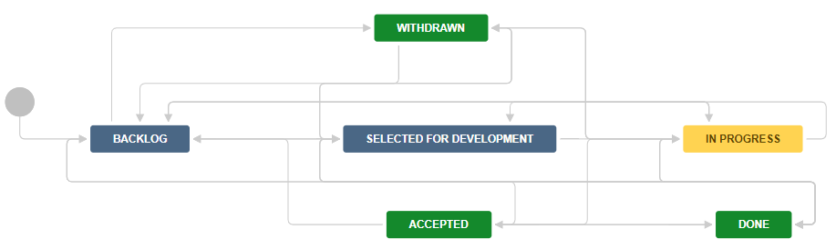

Story¶

The workflow of the Story depends on the Original Estimate or Sub-Tasks being created and updated to reflect the work being done. Setting Original Estimate also sets Remaining Estimate. Logging work reduces Remaining Estimate. In the Log Work screen, Remaining Estimate can also be set manually.
State |
Meaning |
Who should move to this state |
Conditions |
Automation |
Accepted |
Acceptor agrees work is complete |
Product Owner |
None |
None |
Done |
All work completed |
Any member |
Only available if: ** Remaining Estimate** = 0 or All Sub-Tasks are Done |
Move to state when: ** Remaining Estimate** = 0 or All Sub-Tasks are Done |
In Progress |
Being worked in a Sprint |
Any member |
Only available if: ** Remaining Estimate** > 0 or At least one Sub-Task moves to In Progress or Done |
Move to state when any Sub-Task moves to In Progress |
Backlog |
Newly entered |
Any member |
None |
None |
Withdrawn |
Product Owner agrees Epic is no longer needed |
Reporter |
None |
None |
Selected for Development |
Ready to be scheduled in a Sprint |
Team, as part of planning |
None |
None |